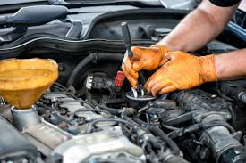

Servicios para tu Auto
Mantenimiento de motor
Cambio de aceite
El cambio de aceite consiste en sustituir el aceite usado del motor por aceite nuevo, asegurando así una correcta lubricación de las piezas internas. Este proceso previene el desgaste prematuro del motor, reduce la acumulación de residuos y mejora el rendimiento del vehículo. Es un mantenimiento esencial para prolongar la vida útil del motor y mantener su funcionamiento eficiente.